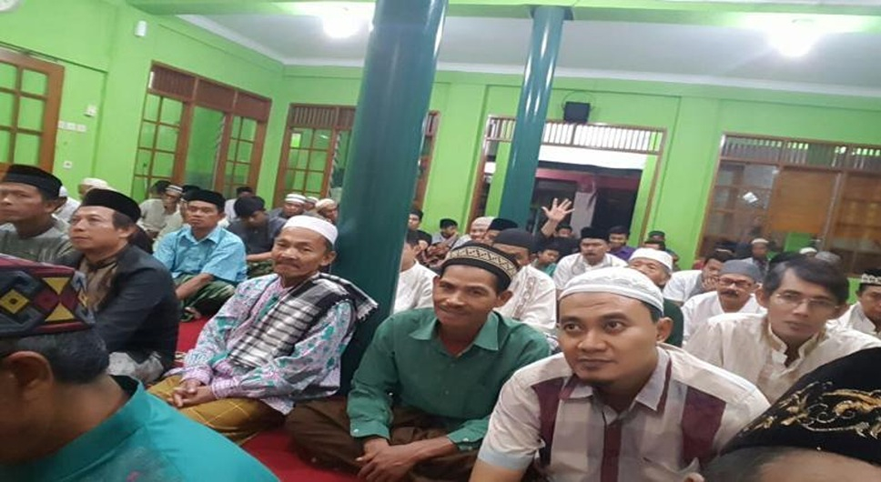
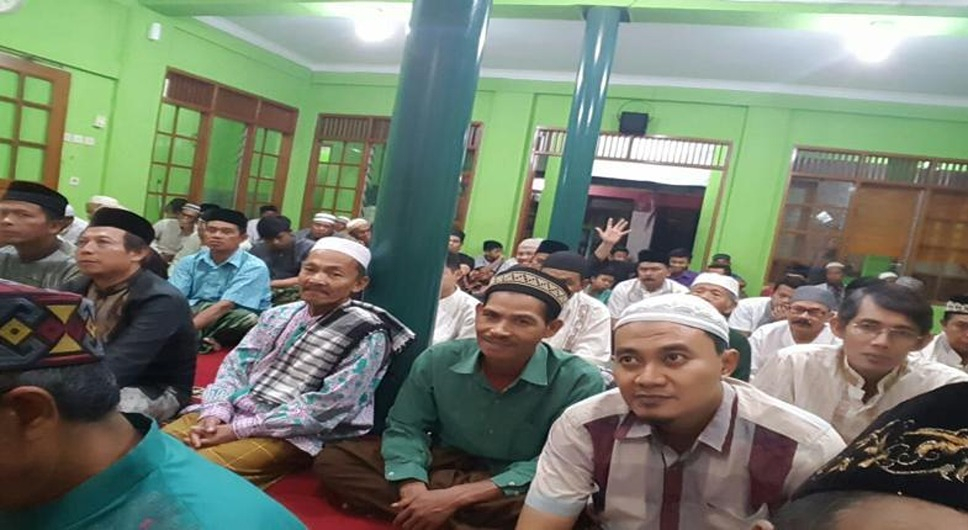

Sukamiskin adalah salah satu kelurahan di Kecamatan Arcamanik, Kota
Bandung, Jawa Barat, Indonesia.
Berita
Informasi Seputar Wilayah Sukamiskin
Kang Pisman Bangkitkan Indeks Kebahagiaan Warga
Sukamiskin Bandung
BANDUNG, jabar.waspada.co.id - Selain Kampung Cibunut Berwarna,
Kelurahan Kebon Pisang, Kecamatan Sumur Bandung menjadi
percontohan Kampung Kawasan Bebas Sampah, termasuk salah satu
program dari Pemerintah Kota Bandung. Demikian halnya Kelurahan
Sukamiskin, Kecamatan Arcamanik.
...selengkapnya
Tepat HJKB 2021, Kelurahan Sukamiskin Sisir Warga yang Belum
Tervaksin
Bandung, Beritainspiratif.com - Lurah Sukamiskin Farida Agustini
menyampaikan hari ini bertepatan dengan peringatan Hari Jadi
Kota Bandung (HJKB) yang ke-211 Tahun 2021 kami kembali
menggelar vaksinasi massal bagi warga U 12-17 keatas, bertempat
di Kantor Kelurahan Sukamiskin Jalan Pacuan Kuda Kota Bandung,
Sabtu (25/9/2021).
...selengkapnya
Tim Bappenas RI Kunjungi Kelurahan Sukamiskin Kota Bandung
Kota Bandung, Beritainspiratif.com - Dalam rangka Penggalian
Lapangan Terkait Implementasi Kelurahan Sadar Hukum [Kadarkum] 4
Orang Tim dari Bappenas (Badan Perencanaan Pembangunan Nasional)
RI Jakarta melakukan kunjungan ke Kelurahan Sukamiskin Kecamatan
Arcamanik Kota Bandung, Selasa (9/11/2021) pagi. Lurah
Sukamiskin Farida Agustini dalam sambutan penerimaannya
menyampaikan terima kasihnya kepada Tim Bappenas atas
kepercayaan yang telah menetapkan Kelurahan Sukamiskin.
...selengkapnya
Inovasi Lokal Kolam Retensi, Ciptakan Kolaborasi Antar RW di
Kelurahan Sukamiskin
BANDUNG, jabar.waspada.co.id - Kolam Retensi yang juga Tambak
Ikan di Kawasan RW 17, Kelurahan Sukamiskin, Kecamatan
Arcamanik, kini meciptakan adanya kolaborasi antar RW di kawasan
tersebut. Wali Kota Bandung, Oded M Danial mengatakan ini
merupakan inovasi lokal dari RW17 yang memang mempunyai potensi
disini. “Ya ini merupakan inovasi lokal dari RW 17 disini,
karena memang potensi disini ada, kolam retensi yang dibangun
2017, alhamdulillah sekarang oleh Pak RW dan Masyarakatnya.
...selengkapnya
Sejarah
Kelurahan Sukamiskin yang berada di Kecamatan Arcamanik Kota
Bandung, dahulu sebelum diberlakukan Peraturan Pemerintah (PP) No.
16 Tahun 1987 tentang Perubahan Batas Wilayah Kabupaten dan Kota
Bandung berstatus sebuah Desa, merupakan pemekaran dari Desa
Cisaranten Kulon Kecamatan Buahbatu Kabupaten Bandung, yang
dimekarkan pada tanggal 14 Juli 1984 sebagai Desa Persiapan, dan
baru berstatus Desa Definitif pada tanggal 14 Pebruari 1986. Desa
Sukamiskin merupakan daerah agraris, tanah nan luas sebagian besar
merupakan hamparan pesawahan, sejak tahun 1979 mulai terjadi
pergeseran dari daerah agraris menjadi daerah pemukiman penduduk,
yang diawali hadirnya perumahan pemukiman penduduk Arcamanik Endah,
kemudian disusul dengan perumahan perumahan lainnya. Kepala Desa
yang pertama dan terakhir dipilih rakyat adalah Tata Setiawan,
sedangkan selanjutnya Jabatan ini diisi atas kebijaksanaan Walikota
Bandung, karena terhitung mulai tanggal 1 April 1989 Desa Sukamiskin
resmi termasuk daerah erluasan Kota Bandung. Popularitas Sukamiskin,
disamping merupakan daerah pertanian, juga Nama Desa di wilayah ini
baru dikenal sejak tanggal 14 Juli 1984, sedangkan nama Sukamiskin
sudah dikenal sejak berdirinya Pondok Pesantren Sukamksin tahun 1918
dan turut mempopulerkan berdirinya Gedung Penjara Sukamiskin yang
dibangun tahun 1923.
 
